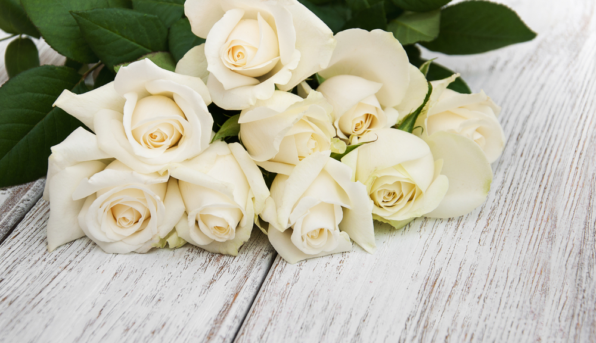

Bunga Mawar (Rose)

Sekilas tentang "Mawar"
Mawar (Rosa spp.) adalah salah satu bunga paling populer di dunia. Dikenal karena keindahannya, aromanya yang khas, dan simbolismenya yang kuat, mawar telah menjadi bagian dari banyak budaya dan tradisi selama berabad-abad. Mawar merupakan tanaman berbunga dari genus Rosa dalam keluarga Rosaceae. Ada lebih dari 100 spesies mawar yang sebagian besar berasal dari belahan bumi utara, terutama Asia. Mawar tumbuh sebagai semak berduri dan menghasilkan bunga berwarna-warni dengan bentuk yang khas.
Ciri-Ciri Umum
- Batang : Umumnya berduri
- Daun : Menyirip dengan tepian bergerigi
- Bunga : Berkelopak banyak dengan warna beragam (merah, putih, kuning, oranye, ungu, dll)
- Aroma : Harum dan khas
- Buah : Disebut rose hip, mengandung banyak vitamin C
Jenis-Jenis Mawar
- Mawar Liar (Wild Roses)
Tumbuh alami, biasanya hanya memiliki lima kelopak, dan ditemukan di alam bebas.
- Mawar Budidaya (Cultivated Roses)
Dikembangkan secara khusus untuk keindahan dan variasi warna. Beberapa jenis populer :
- Hybrid Tea : Mawar dengan batang panjang, populer untuk buket
- Floribunda : Banyak bunga dalam satu tangkai
- Grandiflora : Kombinasi antara Hybrid Tea dan Floribunda
- Climbing Roses : Tumbuh merambat, cocok untuk pagar atau pergola
- Miniature Roses : Ukuran kecil, cocok untuk pot
Manfaat Mawar
- Dekorasi (Digunakan untuk taman, buket, acara pernikahan, dan perayaan)
- Aromaterapi (Minyak mawar digunakan untuk relaksasi dan pengobatan alternatif)
- Kosmetik (Air mawar sering digunakan dalam skincare untuk menyegarkan dan menenangkan kulit)
- Kuliner (Kelopak mawar bisa dijadikan teh, selai, sirup, atau garnish)
- Kesehatan (Rose hip kaya vitamin C, baik untuk daya tahan tubuh)
Arti dan Simbolisme Warna Mawar
Setiap warna mawar memiliki makna tersendiri :
- Merah : Cinta dan gairah
- Putih : Kesucian dan ketulusan
- Kuning : Persahabatan dan keceriaan
- Hitam (Jarang) : Perpisahan atau misteri
- Merah Muda : Kekaguman dan rasa terima kasih
Manfaat Mawar
- Sinar matahari (Butuh sinar matahari langsung minimal 6 jam sehari)
- Penyiraman (Secukupnya, jangan sampai tanah terlalu basah)
- Pemangkasan (Lakukan secara rutin agar tumbuh subur dan berbunga maksimal)
- Pupuk (Gunakan pupuk khusus tanaman berbunga secara berkala)
Mawar bukan sekadar bunga hias, ia adalah simbol cinta, keanggunan, dan ketahanan. Tak heran jika mawar menjadi bunga favorit di seluruh dunia.